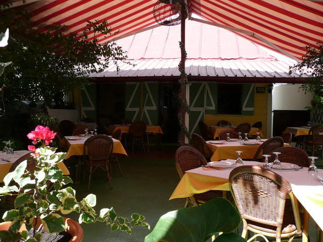
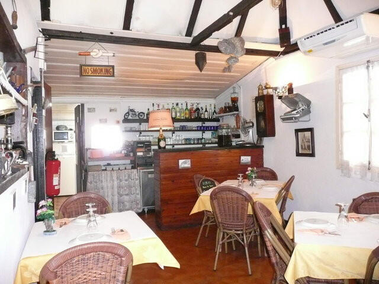
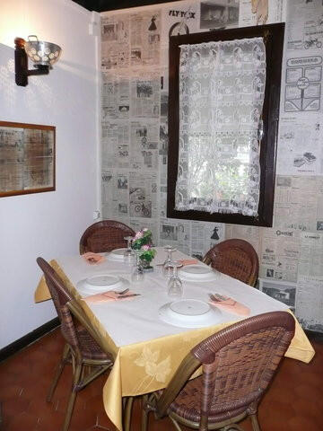

Cuisine créole au feu de bois · Saint-Denis
Une petite case créole, sa varangue, son jardin fleuri et le parfum du feu de bois.

La case
Lé Gadiamb s’est installé dans une petite case créole, avec sa varangue et son jardin fleuri, meublée et décorée comme les cases d’autrefois.
Michel, Jessica et leur équipe cuisinent « Goûts et Traditions lontan » : une cuisine créole traditionnelle, essentiellement au feu de bois, avec les meilleurs produits de La Réunion, au gré des saisons et du marché local.
On s’y installe dans une rue calme de Saint-Denis, à l’ombre de la terrasse, avec un accueil et une ambiance que les convives décrivent volontiers comme chaleureux.
[Votre histoire en 3 lignes : la case, sa famille, ce qui vous a donné envie d’ouvrir]


À l’ardoise
Civet zourite, canard à la vanille, cabri massalé et carrys généreux, les plats que la maison aime mettre en avant.
Suggestions à l’ardoise de 17 € à 25 €. Et pour finir, un petit rhum arrangé offert à la fin du repas.
[Ici, vos plus belles photos de plats et de cuisine au feu de bois]
Mis en avant sur la page Facebook de la maison.
Mis en avant sur la page Facebook de la maison.
Mis en avant sur la page Facebook de la maison.
Saucisses fraîches et fumées, saluées dans les avis d’avril 2026.
Aux camarons, avec riz et grains.
Une recette de poisson à la carte de la maison.
Parmi les desserts maison, avec des sorbets locaux : tangor, ananas, goyavier.
Ce qu’on en dit
Avis publiés sur la fiche Petit Futé du restaurant, avril et mai 2026.
« Tout était parfait : accueil très sympathique par Guillaume samedi midi. Serveuses très agréables. Cuisine excellente rougail saucisses avec saucisses fraîches et fumées. Dessert crème brûlée à la banane à tomber. Ti punch excellent. Un très agréable moment sur la jolie terrasse. »
Isabelle M. · avril 2026
« Excellent repas convivial et ombragé au gadiamb, nous recommandons tous les plats notamment le riz chauffé et les saucisses. Nous reviendrons à coup sûr ! »
Avis Google · 23 avril 2026
« Super cuisine! Les produits sont de très bonne qualité et ça se ressent dans la cuisine. »
Avis Google · 5 avril 2026
Venir